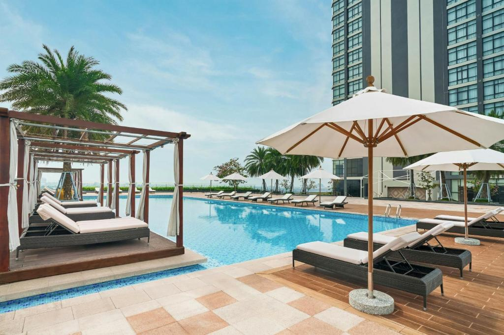

Hình Ảnh Nổi Bật



Giới Thiệu
Cách Bến Ninh Kiều chỉ 2,4 km, Vinpearl Hotel Cần Thơ có hồ bơi ngoài trời tạo cảm giác dễ chịu. Khách ở khách sạn này có thể thưởng thức hàng loạt các món ăn địa phương và quốc tế tại nhà hàng trong khuôn viên hoặc thư giãn tại quầy bar.
Các phòng nghỉ được trang bị máy điều hòa, TV truyền hình cáp, minibar cùng phòng tắm riêng hiện đại. Du khách có thể tận hưởng các dịch vụ spa, trung tâm thể dục, câu lạc bộ trẻ em và nhiều tiện ích cao cấp khác.
Với vị trí thuận lợi và chất lượng dịch vụ đạt chuẩn quốc tế, Vinpearl Hotel Cần Thơ là lựa chọn hàng đầu cho du khách khi đến với thành phố Cần Thơ.
Thông Tin Liên Hệ
- Số điện thoại: 0292 3761 888
- Địa chỉ: 209 Đường 30/4, Quận Ninh Kiều, Thành phố Cần Thơ
- Email: res.VPCHCT@vinpearl.com
- Website: www.vinpearl.com
- Mở cửa: 07:00
- Đóng cửa: 23:59
Dịch Vụ
Wifi miễn phí
Hồ bơi ngoài trời
Spa
Karaoke
Bãi đỗ xe
Lễ tân 24h
Thang máy
Máy lạnh
TV màn hình phẳng
Nhà hàng
Quầy bar
Phòng gym